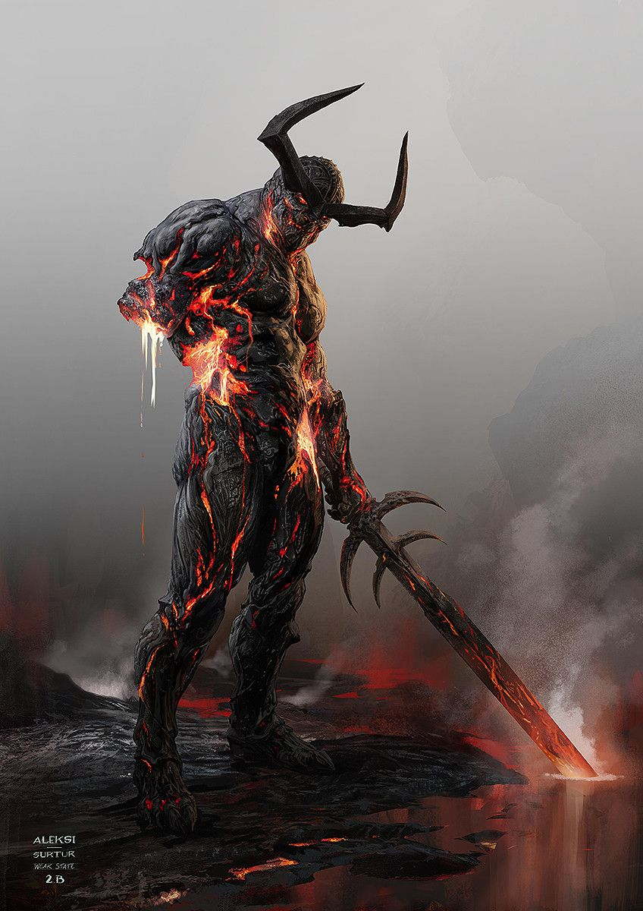

GEUN
명예롭고 숭고한 우리의 영웅 그 자체야. 보스에 대적할만한 자격을 갖추었지. 여기 그의 스텟을 확인해봐
- 보스한테 진 횟수 : 1019억 1928만번
- 부활 횟수 : 2931조 6292만번
- 체력 : 100
- 회복량 : 1%
- 공격력 : 12
근태의 옛날 기록을 가져와봤어.
때로는 패배자의 낙인이 정확하게 들어맞을 때도 있다. 우유부단하고 비겁했으며, 오만하고 무지했던
근태는 몇 줌도 안되는 육개장의 보스들, 이 시대의 'RAGNAROK', 정복자들에게 이렇다 할 저항도
하지 못한 채 육개장 제국을 통째로 갖다 바쳤다. 그가 믿고 의지한 것은 오로지 ‘경민의 비행기’ 뿐이었다.
죽어가던 그는 마지막 숨통을 부러진 손으로 잡아내며 끝내 한마디를 전하고 전사한다.
"영원한 안식은 내가 검을 놓았을때 실현된다. 아직은 그 검을 내려놓을때가 아니다."
